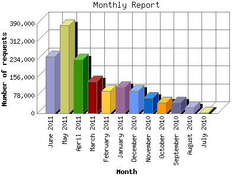

The Monthly Report identifies activity for each month in the report
time frame. Remember that each page hit can result in several server requests
as the images for each page are loaded.
Note: Depending on the
report time frame, the first and last months may not represent a complete
month's worth of data, resulting in lower hits.

| Month | Number of requests | Number of page requests | |
|---|---|---|---|
| 1. | July 2010 | 2,331 | 173 |
| 2. | August 2010 | 26,387 | 2,214 |
| 3. | September 2010 | 45,030 | 1,923 |
| 4. | October 2010 | 45,635 | 3,137 |
| 5. | November 2010 | 65,871 | 2,370 |
| 6. | December 2010 | 96,671 | 2,694 |
| 7. | January 2011 | 113,584 | 3,531 |
| 8. | February 2011 | 98,537 | 2,840 |
| 9. | March 2011 | 138,529 | 3,764 |
| 10. | April 2011 | 232,994 | 3,088 |
| 11. | May 2011 | 382,427 | 3,158 |
| 12. | June 2011 | 246,246 | 2,517 |
Most active month March 2011 : 3,764 pages sent. 382,427 requests handled.
Monthly average: 2,617 pages sent. 124,520 requests handled.
This report was generated on June 15, 2011 14:02.
Report time frame July 28, 2010 00:18 to June 15, 2011 00:01.
| Web statistics report produced by: analog 6.0 / Report Magic 2.21 |